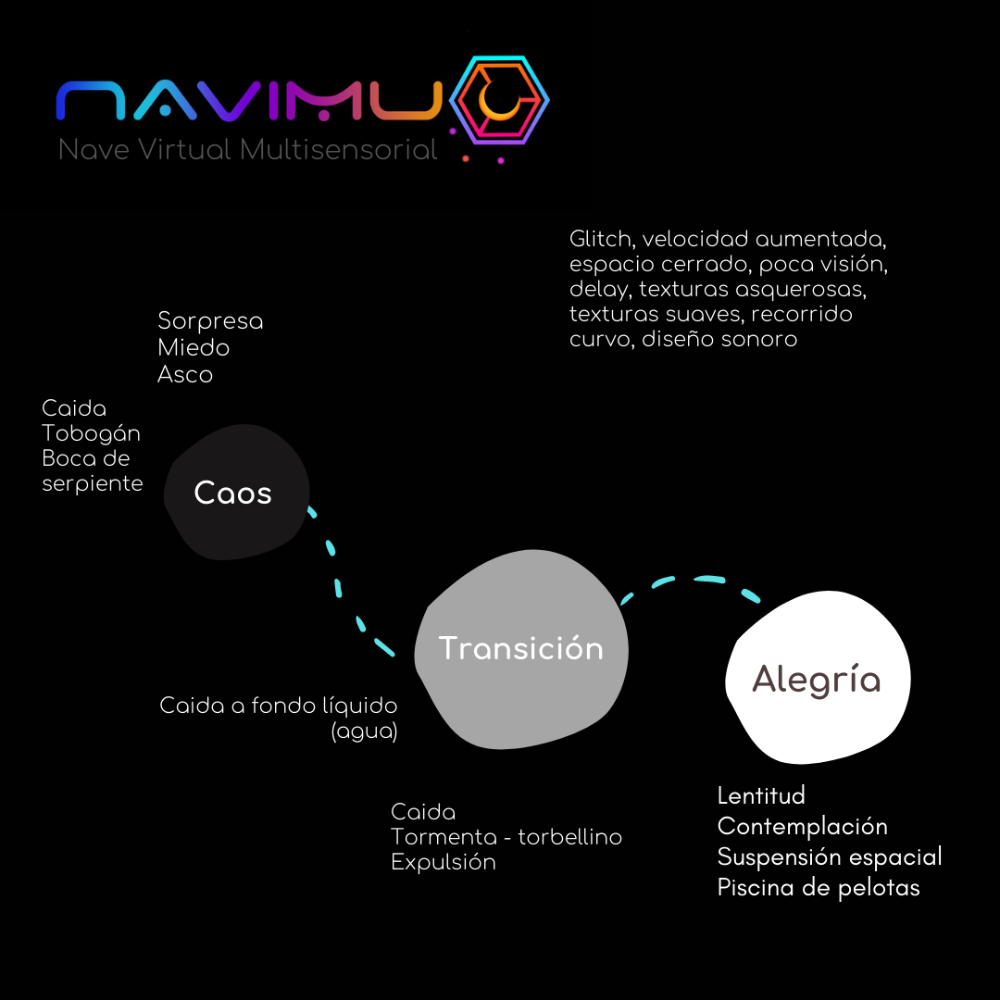
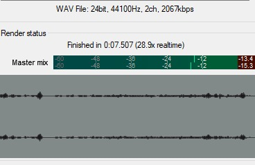
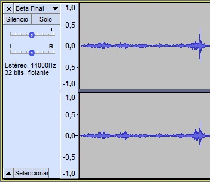
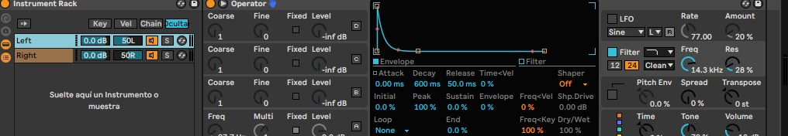
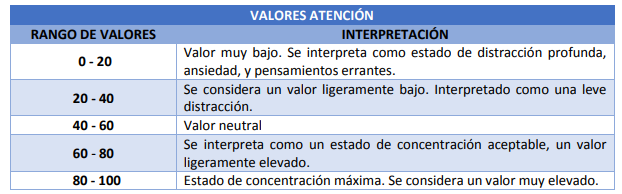
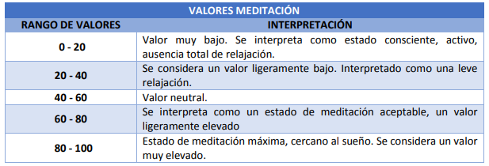

Los primeros pasos se dieron en el momento de estructurar la idea del semestre, esta se valió de diferentes elementos para su consolidación. Entre estos elementos estuvieron el interés por la realidad virtual, la neurociencia cognitiva aplicada a la generación de emociones, esto último teniendo en cuenta tanto diseño visual como sonoro.
Después de mirar estos intereses y puntos necesarios para consolidar el proyecto se comenzó por hacer la correspondiente investigación de base para iniciar el trabajo, mientras paralelamente se construían los perfiles de los usuarios a los que estaría dirigida la pieza final. Cuando ya se tenían las bases consolidadas se procedió a establecer una ruta por las emociones básicas y de esta manera conceptualizar el recorrido. Este recorrido consta de 3 partes que son: Caos, transición y alegría. Para este se establecieron los elementos necesarios que aportaran tanto desde la imagen, como desde el sonido.
Luego de tener definidos los elementos necesarios para comenzar a trabajar se realizó un plan de trabajo con fechas y objetivos a corto plazo para ir viendo la construcción del proyecto.
Después de presentarse diversos problemas, entre ellos el paro, se opta por redefinir la entrega final (dentro de lo que compete al semestre). Es en este punto donde se define trabajar principalmente en el sonido y dejar la parte visual meramente como un prototipo, sin descartar las pruebas electroencefalográficas con usuarios, pues es uno de los principales objetivos del proyecto, la lectura de estos datos para verificar la aplicabilidad de las herramientas que brindan las ciencias cognitivas en el campo de la comunicación.
El diseño sonoro se planteó desde la investigación en el sonido binaural, en pocas palabras por su estrecha relación con las ciencias cognitivas y por su capacidad de ser medibles con las herramientas electroencefalográficas a las que teníamos acceso. El sonido se ejecutó por medio de Mateo, un integrante que llegó a conformar parte del equipo en la etapa de producción. Su conocimiento como estudiante de informática músical, nos brindó varias herramientas para la composición y diseño sonoro de NAVIMU. En los siguientes puntos explicaremos a grandes rasgos cómo se realizó la elaboración técnica de las piezas que pueden escuchar en Pruebas y resultados
1) La frecuencia de muestreo: la pieza sonora tiene una frecuencia de 44100Hz, debido a que se recomienda ese nivel de Hz para la master de cualquier programa de audio que requiera grabaciones, para que luego se puedan captar todos los Hz en todos los rangos y no se pierda ninguna señal por minuto, permitiendo el cambio de las frecuencias de la pieza hasta llegar a la deseada. El umbral del mix de la master oscila entre los -12dB y los -15, esto se hace para mejor adaptación del oído al escuchar la pieza.
2) Frecuencia adaptada: luego del muestreo se toma el espectro del audio y se cambia a 14Hz, esto se traduce en 14000 Hz, que es la medida inicial de hercios para la onda Beta, onda en la que se realizará la primera composición sonora.
3) Automatización de Hz ,dB y paneos binaurales: en este punto se crean unos envíos para ambos oídos, izquierdo (Left) y derecho (Right), para que ambos actúen como respuesta y recepción al 100% se realiza un paneo de Left a 50% y el Right a 50%. En la imagen podemos ver el paneo y onda del oído Right, con una decay de 600ms, un release de 50.0 y una frecuencia de onda que está en 14,3Hz(color rojo) pero la de paneo a 21.7 (color verde), la ganancia (volumen) se encuentra en -16dB.
En esta imagen podemos apreciar el Left de la pieza sonora, con la misma frecuencia de onda (14.3Hz), pero con frecuencia de paneo de 29 Hz.
4) Pluggin: Esta herramienta permitió la automatización completa del track para marcar el sonido Binaural, se implementaron dos rangos o picos marcados, uno es que el Azimuth o la envolvente que oscila entre los 78.9° y los -118° . el headroom (Up) en 120° y para Backroud (Down) en -172°. Las reflexiones se hicieron basadas en un cuarto de 10.0m, simulando que las paredes eran de un material de tela, por eso aparece el Drapes (cortinas).
5) Filtros: Se usa un delay y una reverb bajo la misma escala de Hz que tiene el audio en general, entre los 14,5 y 14.8 Hz para no afectar la unidad frecuencial de la pieza.
Para este punto usamos principalmente el Algoritmo eSense: Atención y Meditación. El casco Mindwave de Neurosky, permite captar y procesar la señal cerebral “cruda” raw , contiene los datos tal y como han sido adquiridos desde el sensor. Esta señal se desglosa en: alpha, theta, gamma, beta. El casco permite captarlas individualmente, y también los estados mentales de atención y meditación, gracias al algoritmo eSense y el parpadeo del usuario.
Sobre la atención (similar a concentración) meditación (similar a relajación) decimos que estos dos datos del algoritmo eSense se nutren de las ondas cerebrales, ya que la atención se basa en las ondas beta y gamma y la meditación en las ondas alpha y theta. Son señales ya filtradas y trabajadas, que nos dan un resultado exacto en un rango de valores de 0 a 100.
El medidor eSense para la atención indica la intensidad del nivel de un usuario de “foco” mental o “atención”, tal como la que se produce durante la concentración intensa y dirigida. Su rango de valores va de 0 a 100. Las distracciones, pensamientos errantes, falta de concentración o ansiedad, pueden disminuir el nivel de atención.
El medidor eSense de Meditación indica el nivel de “calma” mental de un usuario o de “relajación”. Oscila entre 0 y 100. Se ha de tener en cuenta que la meditación es una medida de los estados mentales de una persona, no a nivel físico, por lo que simplemente relajar todos los músculos del cuerpo no conlleva inmediatamente un mayor nivel de meditación.
Hay que tener en cuenta que las señales recibidas del cerebro están sujetas a las reglas de varianza y sufren fluctuaciones, por lo que es casi imposible obtener un valor exacto en las mediciones. Sin embargo, usando los rangos (0-20, 20-40, 40-60, 60-80, 80-100) se puede dar una interpretación a esos valores aunque varíen de forma dinámica.